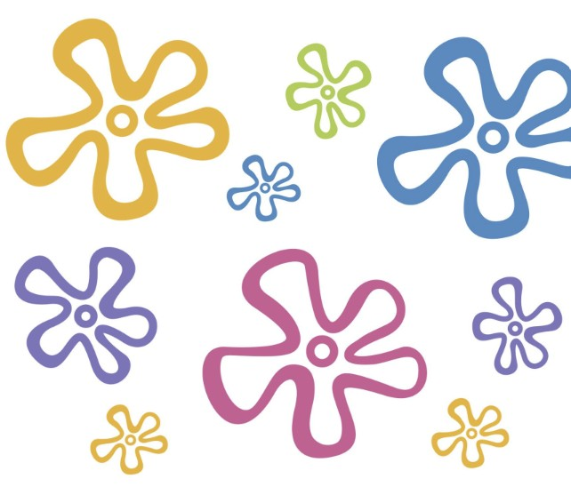
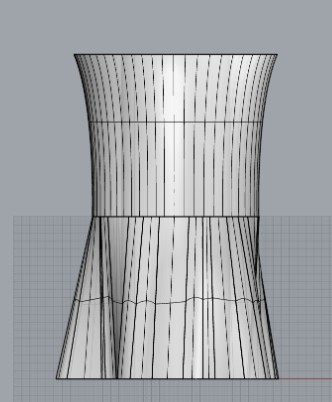
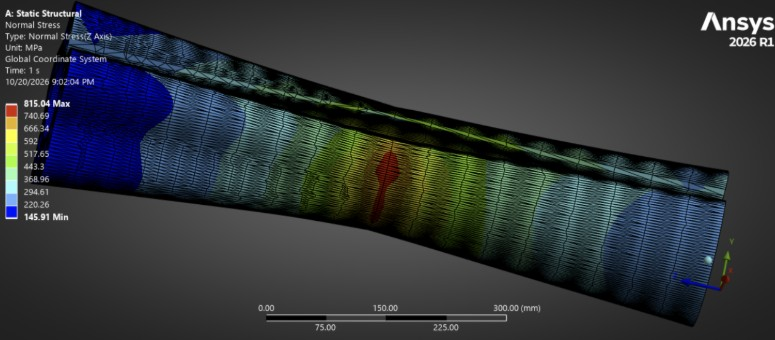
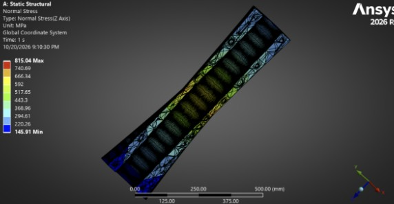
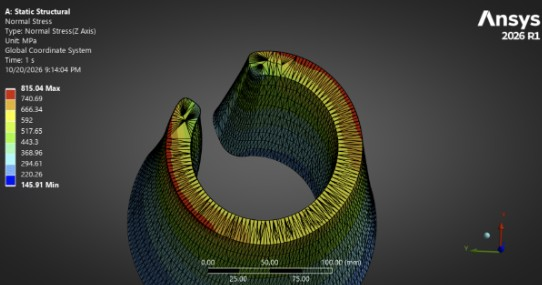

Structural Analysis
In my CEE 4745: Automation in Concrete class, I learned how to optimize designs to withstand different loadings. In this class, we were tasked to design a structural model to be printed using 3D printed concrete and test it under an applied loading. We were given creative freedom in developing our designs, and our inspiration came from the iconic flower-shaped cloud from Spongebob SquarePants. For our initial design, we wanted to recreate the appearance of the cloud by having a seperate inner circle surrounded by an outer flower pattern. However, we quickly ran into a challenge. The structure needed to be printed using a continuous toolpath, meaning we could not keep the two patterns completely seperate. We experimented with several different patterns before finding a way to connect the design into one continuous path. Using Rhino 3D, we developed our initial model and continued making adjustments.
After receiving feedback about the amount of concrete required for our intial design, we decided to reduce the overall width of our structure. We also reconsidered our reinforcement layout after modeling the structure in ANSYS. The analysis showed that the highest stress concentrations were expected near the middle of the structure, so we added circular rebar in that area to provide additional reinforcement.
Looking back, one of the biggest things I learned was that the first design is rarely the final design. I had to learn to adapt our original idea to account for practical constraints, such as the continuous toolpath, material use, and structural performance. This project also gave me experience in tools like Rhino 3D and ANSYS to inform design decisions.